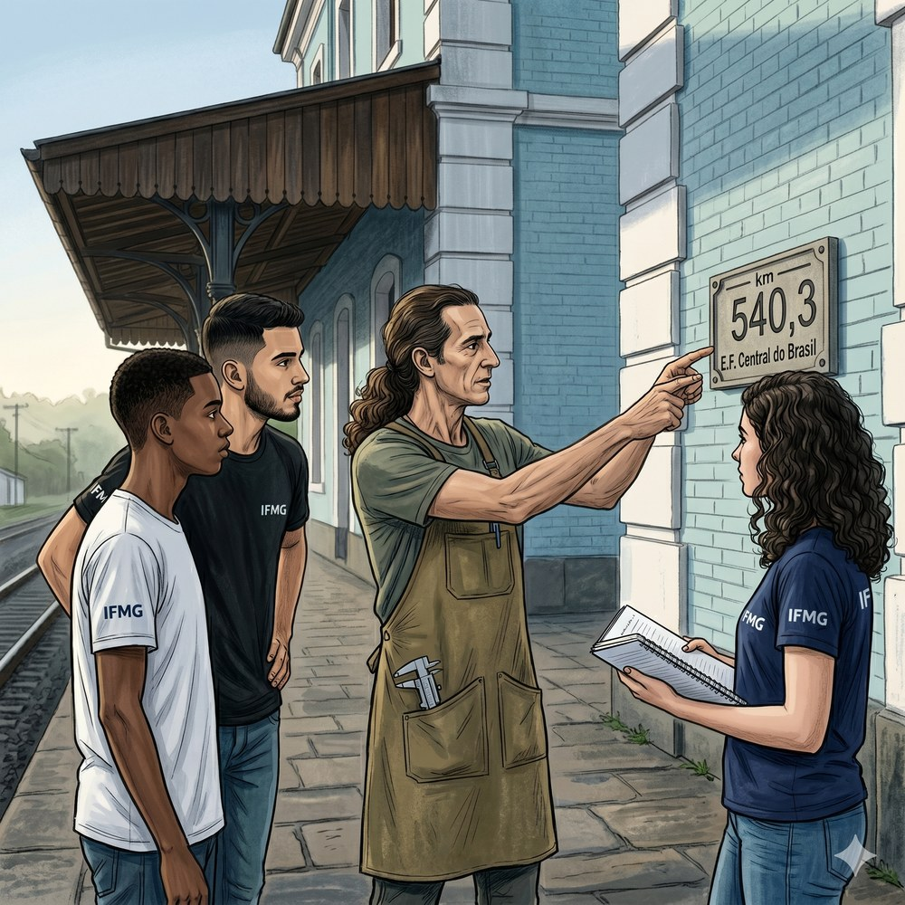
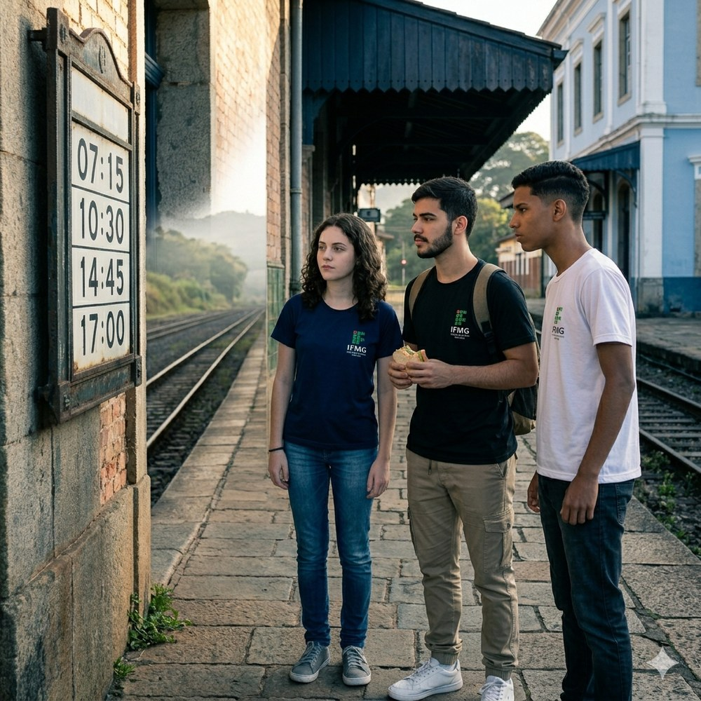
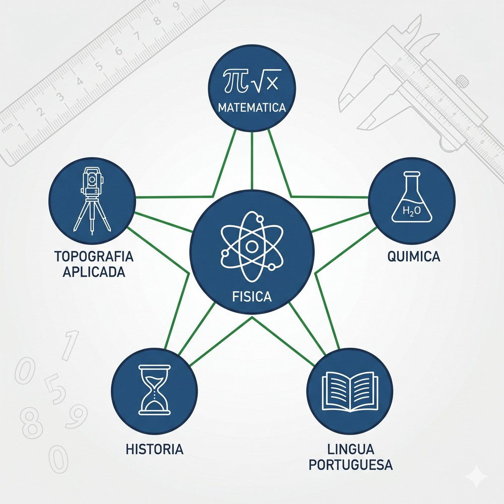

“O que o olho não alcança, a escala revela.”
A Praça Cesário Alvim acordava devagar naquela manhã de maio.
Sofia chegou primeiro. Ela havia tomado o ônibus da linha Bauxita, descido na parada da Avenida dos Inconfidentes e cruzado a pequena praça a pé, seguindo o cheiro de café que vinha de um quiosque ainda fechado. A estação estava à sua frente: o prédio colonial de tijolos pintados em azul pastel e branco, com a marquise de madeira escurecida pelo tempo sustentada por colunas de ferro fundido. Na fachada, uma placa de pedra gravada anunciava: 1888. E logo abaixo, em algarismos menores: km 540,3 — E.F. Central do Brasil — Ramal de Ponte Nova.
Ela parou diante da placa e inclinou a cabeça.
Quinhentos e quarenta vírgula três quilômetros. Um número com vírgula. Uma distância com dois algarismos antes da vírgula e um depois. Ela sabia, sem ainda saber dizer exatamente por quê, que aquilo importava.
Pedro chegou logo depois, com a mochila aberta e um sanduíche na mão.
— Por que a placa tem vírgula? — perguntou Sofia, sem virar para ele.
— Porque não dá ser exatamente 540 — disse Pedro, mordendo o sanduíche. — Deve ser 540 e mais um pedaço. 300 metros.
— Trezentos metros — repetiu Sofia devagar. — Que é zero vírgula três de quilômetro. — Ela apontou para a placa. — É isso que está escrito ali: quinhentos e quarenta quilômetros e trezentos metros. Mas em vez de escrever tudo isso, alguém decidiu escrever 540,3. Uma vírgula. Um algarismo. A mesma informação.
Lucas apareceu pelo lado sul da praça, vindo de baixo da marquise coberta, onde os trilhos de chegada cruzavam a plataforma de pedra. Ele havia chegado cedo o suficiente para examinar o painel de horários metálico fixado na parede lateral da estação — um painel de ferro esmaltado, com os horários do Trem da Vale impressos em fileiras de algarismos: 07:15 · 10:30 · 14:45 · 17:00.
— Olha aqui — Lucas chamou os dois.
Eles se aproximaram. O painel mostrava quatro horários. Cada um tinha dois algarismos para as horas, dois pontos, dois algarismos para os minutos. Nenhum chegava a três algarismos de horas. Nenhum ultrapassava 59 minutos.
— Por que os minutos nunca passam de 59? — perguntou Lucas.
— Porque um minuto a mais já é uma hora — disse Pedro.
— Exato — disse Lucas. — Os minutos voltam ao zero quando chegam a 60. Igual aos segundos. Isso é base 60 — o sistema que os babilônios inventaram para medir tempo e ângulos. Mas as horas, aqui, vão até 23. Base 24.
— E os quilômetros na placa lá fora — disse Sofia — estão em base 10. Décimos. Centésimos. Milésimos. Sempre potência de dez.
Os três ficaram olhando para o painel e para a placa de granito ao mesmo tempo, como se a estação inteira fosse um diagrama de sistemas de numeração distintos empilhados sobre a mesma pedra.
Foi nesse momento que o Prof. Julio apareceu pela porta de vidro da estação. Ele carregava um caderno e um paquímetro metálico preso ao bolso do avental.
— Bom dia, turma. — Ele olhou para os três estudantes e depois para o ponto de cada olhar. — Estão observando a conversa que os sistemas de numeração travam nessa fachada?
— Tem base 10, base 60 e base 24 — disse Lucas.
— Isso — disse o Prof. Julio. Ele caminhou até a placa de granito e passou o dedo sobre os algarismos gravados. — E todos eles compartilham algo: usam os mesmos dez símbolos. Zero, um, dois, três, quatro, cinco, seis, sete, oito, nove. Os algarismos são os mesmos; o que muda é a base — o ponto em que se reinicia a contagem e se passa para a próxima posição.
Sofia olhou para as mãos.
— É por causa dos dedos — ela disse.
— Talvez — disse o Prof. Julio. — Mas por que os babilônios usavam base 60 se também tinham dez dedos?
Nenhum dos três respondeu. O trem da manhã assobiou ao fundo, ainda longe, surgindo no corredor de trilhos que atravessava o bairro Barra. O som ecoou na marquise de madeira, desceu pela plataforma de pedra e sumiu no ar fresco de maio.
— É disso que trata essa trilha — disse o Prof. Julio, com uma leveza que parecia não combinar com a profundidade da questão. — De onde vêm os dez símbolos. O que eles carregam. E o que acontece quando cruzamos uma vírgula.


A Estação Ferroviária de Ouro Preto existe exatamente como descrita acima: o prédio colonial de 1888, a plataforma de pedra, o painel de horários metálico e os trilhos do Trem da Vale (Ouro Preto–Mariana) que partem daqui.
Como acessar e usar o Street View: 1. Acesse o link abaixo — ou abra o Google Maps e pesquise por “Estação Ferroviária de Ouro Preto, MG”. 2. Clique no ícone do boneco amarelo (Pegman) no canto inferior direito do mapa e arraste-o até a rua ou local desejado. 3. Solte o boneco sobre a rua destacada em azul — você entrará no modo Street View. 4. Use as setas na tela para caminhar e o mouse (ou o dedo, no celular) para girar a câmera 360°. 5. Na plataforma, procure a fachada azul-e-branca e a placa de granito com a numeração da linha ferroviária — os mesmos algarismos que Sofia leu naquela manhã de maio.
A estação é isso: um museu vivo onde sistemas de numeração distintos — base 10, base 60, base 24 — convivem na mesma parede de pedra há mais de 130 anos.
Muito antes de existirem algarismos ou calculadoras, contar era uma questão de corpo: dedos, falanges, mãos abertas. O sistema decimal que hoje usamos para medir toneladas de minério ou milésimos de milímetro nasceu de uma escolha humana muito simples — e nem sempre óbvia.

No século XVIII, quando os engenheiros da Coroa Portuguesa percorriam o Quadrilátero Ferrífero em busca de veios de ouro, os registros de peso, volume e comprimento eram feitos em oitavas, palmos e braças — unidades que não obedeciam a uma base uniforme. A fundação da Casa dos Contos de Ouro Preto (1770), responsável pela fundição e taxação do ouro extraído, revelou a urgência de um sistema comum: sem uma base numérica compartilhada entre mineradores, fiscais e comerciantes, fraudes eram inevitáveis. A adoção progressiva do sistema decimal na metrologia imperial brasileira, ao longo do século XIX, resolveu essa inconsistência — e a Escola de Minas de Ouro Preto (1876) foi criada, em parte, para disseminar esse padrão.
O sistema de numeração de base 10, também chamado sistema decimal posicional, é um sistema em que o valor de cada algarismo depende de sua posição relativa. Ele utiliza dez símbolos distintos — os algarismos indo-arábicos: 0, 1, 2, 3, 4, 5, 6, 7, 8 e 9 — e a regra de que cada posição vale dez vezes a posição à sua direita. Trata-se de uma convenção cultural, não de uma lei natural: outras civilizações adotaram bases distintas (12, 20, 60) com igual funcionalidade matemática.
No dia a dia de uma mina, técnicos em mineração registram comprimentos, massas e volumes em múltiplos e submúltiplos do sistema métrico — todos estruturados em potências de 10. O paquímetro, o micrômetro, a balança analítica e o teodolito são instrumentos que fazem sentido apenas dentro de um sistema decimal bem compreendido. A NR-22 (Norma Regulamentadora de Segurança e Saúde Ocupacional na Mineração) exige que todos os registros de campo sejam feitos com unidades do Sistema Internacional — base 10 sem exceção.
Por que dez? A anatomia de uma decisão cultural
Sofia caminhou ao longo da plataforma, olhando para as mãos. O Prof. Julio havia dito algo que ela não conseguia largar: “Talvez seja pelos dedos.”
Ela abriu as mãos. Dez dedos. Mas o Prof. Julio também havia dito que os babilônios tinham base 60 com os mesmos dez dedos.
A hipótese mais aceita pelos historiadores da matemática não é anatômica, mas combinatória: um humano com duas mãos abertas representa, visualmente, dois grupos de cinco — e cinco grupos de dois. Dez permite subdivisões por 1, 2, 5 e 10. É divisível o suficiente para o comércio cotidiano e simples o suficiente para ser memorizado por qualquer pessoa sem formação especializada.
Os babilônios escolheram 60 porque 60 é divisível por 1, 2, 3, 4, 5, 6, 10, 12, 15, 20, 30 e 60 — uma riqueza aritmética enorme, especialmente útil para dividir círculos (astronomia e navegação) e frações (comércio de grãos e terra). Mas 60 exige 59 símbolos distintos, o que é inviável para analfabetos. Os hindus resolveram esse problema com uma inovação radical: o zero como posição vazia. Com o zero, qualquer base pode ser expressa com apenas base símbolos distintos. Para base 10, são apenas dez. Para base 60, seriam sessenta — absurdo. Para base 2, são apenas dois: 0 e 1. É a base binária dos computadores.
— Então o que existe de “natural” no sistema decimal — disse Lucas, sentado no banco de pedra da plataforma — é o zero. Não os dez dedos.
— Não exatamente — disse o Prof. Julio. — O zero também foi inventado. Pelos indianos, por volta do século V. Durante mais de mil anos, a humanidade fez matemática sem o zero.
Pedro franziu o cenho.
— Matemática sem zero? Como você escreve “nenhum”?
— Você não escreve — disse o Prof. Julio. — Você simplesmente não menciona. Se a conta dá nada, a conta acaba. O zero é uma abstração: a representação de uma ausência. Isso é uma ideia filosófica antes de ser matemática.
O trem ao fundo apitou novamente — mais próximo agora. A plataforma começou a vibrar levemente sob os pés dos três.
| Civilização | Base | Número de símbolos | Aplicação principal |
|---|---|---|---|
| Hindu-arábica (atual) | 10 | 10 (0–9) | Universal — ciência, comércio, tecnologia |
| Babilônia | 60 | 60 símbolos cuneiformes | Astronomia, geometria, frações |
| Maia | 20 | 20 (pontos e traços) | Calendário, astronomia |
| Computadores (binário) | 2 | 2 (0 e 1) | Eletrônica digital, programação |
| Romano (multiplicativo) | Sem base fixa | 7 letras (I, V, X, L, C, D, M) | Registros administrativos |
A frase-síntese que encerra este tópico: escolher uma base é escolher uma linguagem — e toda linguagem carrega a história de quem a criou.
Um algarismo é apenas um símbolo. Um número é o que acontece quando os símbolos se organizam em posições. Confundir os dois é o primeiro erro que um técnico de campo pode cometer — e o mais caro.

Os algarismos indo-arábicos chegaram à Europa via Al-Andaluz no século XII, trazidos por estudiosos árabes que os haviam herdado dos matemáticos indianos. Em Portugal, sua adoção nas transações comerciais e administrativas foi lenta e resistida: documentos coloniais do século XVII ainda misturavam algarismos romanos (para registros oficiais) e indo-arábicos (para contagens rápidas). Nas atas das câmaras coloniais de Ouro Preto — conservadas no Arquivo Público Mineiro — é possível encontrar, na mesma página, “MDCCXL” (1740 em romano) e “2.340 oitavas de ouro”. Dois sistemas para o mesmo mundo.
Na teoria dos sistemas de numeração, algarismo é um símbolo isolado — um dos dez caracteres do conjunto {0, 1, 2, 3, 4, 5, 6, 7, 8, 9}. Número é a quantidade que resulta da combinação posicional desses algarismos. O algarismo “3” pode representar 3, 30, 300, 3.000 ou 0,003 — dependendo exclusivamente de sua posição em relação à vírgula decimal. Essa distinção é fundamental: confundi-los leva a erros de leitura de instrumentos e registros de campo.
Em mineração, confundir algarismo e número pode ter consequências graves. Uma medida registrada como “32 mm” é diferente de “3,2 mm” e de “320 mm” — embora os algarismos 3 e 2 estejam presentes nas três. O técnico de campo que lê um micrômetro e anota “32” sem especificar a unidade e a posição decimal cria uma ambiguidade que pode comprometer um projeto de perfuração. A NR-22 exige unidades explícitas em todos os registros.
O valor posicional: por que a posição importa mais que o símbolo
Pedro olhou para a placa da estação. 540,3 km.
— Então — ele disse — o algarismo 5 aqui vale quinhentos. O algarismo 4 vale quarenta. O algarismo 0 vale zero. E o algarismo 3 vale três décimos.
— Exato — disse o Prof. Julio. — O mesmo símbolo, o algarismo 5, vale coisas completamente diferentes dependendo de onde está. — Ele pegou o caderno e escreveu: 5 · 100 + 4 · 10 + 0 · 1 + 3 · (1/10).
— Isso é a regra de valor posicional. Cada posição vale 10 vezes a posição à direita.
| Símbolo | Grandeza | Unidade |
|---|---|---|
| N | Número representado | adimensional |
| ai | Algarismo na posição i | {0, 1, 2, 3, 4, 5, 6, 7, 8, 9} |
| 10i | Valor da posição i | potência de 10 |
Lucas anotou no caderno e depois olhou para a equação.
— Então o zero não é “nada” — ele disse. — O zero é uma posição.
— Um marcador de posição — disse o Prof. Julio. — Escreva 107. Sem o zero, você teria 17. O zero avisa: aqui havia uma dezena, mas ela está vazia.
Pedro entendeu de imediato.
— É como um gaveteiro — ele disse. — A gaveta do meio pode estar vazia. Mas se você tirar a gaveta, o número muda de estrutura.
— Essa é a melhor analogia que já ouvi para o zero posicional — disse o Prof. Julio, genuinamente surpreso.
| Ordem | Notação | Potência de 10 | Exemplo em mineração |
|---|---|---|---|
| Bilhão | 1.000.000.000 | 109 | Toneladas de minério em mina de ferro (Carajás) |
| Milhão | 1.000.000 | 106 | Metros cúbicos de estéril removido por ano |
| Milhar | 1.000 | 103 | Metros de galeria perfurada por mês |
| Centena | 100 | 102 | Metros de sondagem em uma campanha |
| Dezena | 10 | 101 | Metros de avanço diário de uma frente |
| Unidade | 1 | 100 | Amostras coletadas em uma bancada |
| Décimo | 0,1 | 10−1 | Precisão de uma régua comum (mm = 0,1 cm) |
| Centésimo | 0,01 | 10−2 | Precisão de um paquímetro padrão |
| Milésimo | 0,001 | 10−3 | Precisão de um micrômetro de mesa |
A frase-síntese: o mesmo algarismo pode valer um bilhão ou um milionésimo — tudo depende de onde ele está sentado.
Nem sempre a vírgula existiu. Por séculos, frações foram escritas por extenso — até um matemático flamengo decidir que havia uma forma mais rápida de dizer a mesma coisa.

A vírgula decimal como separador entre parte inteira e parte fracionária foi proposta pelo matemático flamengo Simon Stevin em 1585, na obra De Thiende (“A Décima”). Antes de Stevin, frações eram escritas como razões explícitas: “3 e 7 décimos” ou “3 + 7/10”. Stevin propôs a notação compacta que usamos hoje — com algumas variações regionais: na Europa continental e no Brasil, usa-se vírgula; nos países anglófonos, usa-se ponto. Essa diferença não é trivial em ambientes técnicos internacionais: a placa da estação que Sofia observou naquela manhã usa a notação brasileira, com vírgula.
Um número decimal é qualquer número que pode ser representado na forma posicional com dígitos à direita da vírgula. Na notação decimal, a vírgula separa a parte inteira (potências não negativas de 10) da parte decimal (potências negativas de 10). Decimais podem ser: (a) exatos — terminam em alguma posição (ex.: 1,25); (b) periódicos — repetem um grupo de algarismos indefinidamente (ex.: 1/3 = 0,333...); (c) não periódicos — como √2 = 1,41421356… Os decimais não periódicos são os irracionais, e não podem ser escritos como fração inteira.
Em laboratório de análise mineral, os resultados de pesagem são sempre registrados com casas decimais — o número de casas depende da precisão do instrumento. Uma balança analítica de precisão 0,0001 g fornece resultados como “12,3475 g”. Registrar apenas “12 g” descarta quatro algarismos significativos e torna o resultado inútil para cálculos de teor metálico. A leitura correta de decimais é uma habilidade técnica fundamental, não apenas matemática.
Lendo a vírgula: parte inteira, parte decimal e a posição que as separa
Sofia havia se aproximado da sala de espera da estação. Numa vitrine de vidro, um recorte de jornal antigo mostrava a inauguração da linha em 1888: “percurso de 12,5 léguas em 3,5 horas”. Léguas e horas — mas a vírgula era a mesma.
— A vírgula sempre foi assim? — ela perguntou.
— Não — disse o Prof. Julio. — Por quase quinhentos anos depois de Cristo, todo mundo escrevia frações separadas. “Doze léguas e meia” era diferente de “12,5 léguas”. Um Simon Stevin teve a ideia de colapsar os dois numa só notação em 1585. E funcionou tão bem que hoje parece natural.
Ele escreveu no caderno: 12,5.
— A vírgula separa duas vizinhanças. À esquerda: a parte inteira — 12, que vale 10 + 2. À direita: a parte decimal — 5, que vale 5 décimos, ou 5/10, ou 0,5. São a mesma quantidade: uma légua e meia.
| Símbolo | Grandeza | Exemplo |
|---|---|---|
| N | Número decimal | 540,3 |
| PI | Parte inteira | 540 |
| PD | Parte decimal | 0,3 (= 3/10) |
Lucas olhou para a equação.
— Então a vírgula é um tradutor — ele disse. — Ela diz: tudo que está à minha esquerda você conta como unidades inteiras. Tudo à minha direita você conta como frações.
— E frações de 10 em 10 — disse Pedro. — Décimos, centésimos, milésimos. Sempre base 10.
A frase-síntese: a vírgula não divide o número — ela revela que todo número decimal é a soma de uma parte contável e uma parte fracionária, ambas obedecendo à mesma potência de 10.
Antes do metro existir, cada rei tinha seu próprio palmo. A padronização de comprimento não foi apenas um avanço científico — foi uma decisão política.

O metro foi definido em 1791 pela Academia de Ciências da França como a dez-milionésima parte do quadrante do meridiano terrestre — uma tentativa explícita de ancorar a medida num fato da natureza, e não no corpo de um rei. Antes disso, o palmo português (22 cm), a polegada inglesa (2,54 cm) e a jarda inglesa (91,44 cm) coexistiam no comércio colonial. No Brasil, a adoção do sistema métrico decimal foi decretada em 1862, durante o Segundo Reinado. Mesmo assim, nas minas de Ouro Preto, os mineiros experientes ainda mediam “em braças” décadas depois — um palmo de resistência cultural a uma mudança que fazia sentido matemático mas rompia com a linguagem do ofício.
O comprimento é uma grandeza fundamental no Sistema Internacional de Unidades (SI), com unidade-padrão o metro (símbolo: m). A escala de comprimento no SI é inteiramente decimal: 1 km = 103 m; 1 dm = 10−1 m; 1 cm = 10−2 m; 1 mm = 10−3 m; 1 µm = 10−6 m; 1 nm = 10−9 m. Os instrumentos de medição linear mais comuns — régua, paquímetro, micrômetro — exploram subdivisões decimais dessa escala, com precisões crescentes.
Na prática de campo em mineração, os instrumentos mais usados para medição de comprimento são: (a) trena de aço (precisão ±1 mm, alcance até 50 m); (b) paquímetro (precisão 0,02 mm, faixa 0–300 mm); (c) micrômetro externo (precisão 0,001 mm, faixa 0–25 mm); (d) estação total (precisão 1 mm a distâncias de até 3 km). Cada instrumento opera numa faixa específica da escala decimal, e o técnico precisa saber em que ordem de grandeza está trabalhando antes de escolher o instrumento correto.
Réguas, paquímetros e a escala que conecta tudo
Pedro havia trazido o paquímetro do laboratório de física do IFMG. Era um instrumento de aço inoxidável, com escala principal em milímetros e nônio com resolução de 0,05 mm.
— Mede isso aqui — disse o Prof. Julio, colocando sobre a bancada uma pequena amostra de quartzo retirada da coleção do laboratório.
Pedro abriu o paquímetro, encostou as faces na amostra e travou.
— Três vírgula quatro centímetros — ele disse. — Ou seja, 34 milímetros. Mais um pouco — o nônio diz 0,05 mm. Então é 34,05 mm.
— Em metros? — perguntou o Prof. Julio.
Pedro franziu o cenho.
— Trinta e quatro vírgula zero cinco milímetros — ele disse devagar — é… trinta e quatro vírgula zero cinco dividido por mil metros. — Ele calculou no caderno. — 0,03405 metros.
L(cm) = L(mm) × 10−1
L(km) = L(m) × 10−3
| Símbolo | Grandeza | Unidade SI |
|---|---|---|
| L | Comprimento | m (metro) |
| 10−3 | Fator de conversão mm → m | adimensional |
| 10−1 | Fator de conversão mm → cm | adimensional |
Sofia observou enquanto Pedro media. Ela havia pego uma régua escolar comum — a mesma que usava desde o ensino fundamental — e estava comparando as escalas: centímetros de um lado, polegadas do outro.
— Uma polegada — ela disse — é quanto?
— 2,54 centímetros — disse o Prof. Julio. — Ou 25,4 mm. É a convenção adotada mundialmente, incluída na norma ISO 1000. Mas 2,54 não é um número “bonito” em base 10. É por isso que a polegada resiste: ela tem divisões em potências de 2 — 1/2, 1/4, 1/8, 1/16 — que são práticas para marcenaria e mecânica. A base 10 é conveniente para ciência; a base 2 é conveniente para dividir ao meio.
| Unidade | Sistema | Equivalência em mm | Uso no Brasil |
|---|---|---|---|
| Milímetro (mm) | SI / Métrico | 1 | Universal (ciência, indústria) |
| Centímetro (cm) | SI / Métrico | 10 | Cotidiano, réguas escolares |
| Metro (m) | SI / Métrico | 1.000 | Construção, topografia, física |
| Quilômetro (km) | SI / Métrico | 1.000.000 | Distâncias geográficas, estradas |
| Polegada (inch) | Imperial | 25,4 | Mecânica industrial, ferramentas |
| Pé (foot) | Imperial | 304,8 | Aviação, projetos com parceiros EUA |
| Jarda (yard) | Imperial | 914,4 | Legado histórico, tecidos |
| Braça (PT) | Colonial | ≈ 2.200 | Legado histórico em mineração |
A frase-síntese: medir comprimento com precisão é escolher o instrumento certo para a escala certa — e toda a escala, no Sistema Internacional, é uma potência de dez.
Toda medida carrega uma confissão: até onde o instrumento sabe, e a partir de onde o observador apenas estima. Saber separar as duas coisas é o que diferencia um registro técnico de um chute com aparência de número.

A formalização das regras de algarismos significativos foi sistematizada no século XX, com o desenvolvimento da metrologia científica. Antes disso, erros de escrita em medidas eram comuns e podiam ter consequências graves: em 1793, durante a medição do meridiano terrestre para definir o metro-padrão, um erro sistemático de algarismos levou a uma discrepância de 0,2 mm na barra-padrão original de platina iridada. Essa discrepância, pequena em aparência, foi suficiente para que o metro-padrão ficasse 0,2 mm mais curto que o valor verdadeiro — e assim permaneceu por quase dois séculos, até a redefinição do metro por velocidade da luz em 1983.
Algarismos significativos são os algarismos que carregam informação confiável numa medida: os algarismos certos (cujo valor é lido diretamente no instrumento) mais o algarismo duvidoso (o último, estimado pelo observador). Todo resultado de medida experimental tem um número finito de algarismos significativos, determinado pela precisão do instrumento. Zeros à esquerda não são significativos (0,0034 tem 2 algarismos significativos); zeros entre algarismos não nulos são significativos (1.002 tem 4); zeros à direita após vírgula são significativos (1,200 tem 4).
Nos laudos técnicos de análise mineralógica e nos relatórios de perfuração, o número de algarismos significativos comunica a confiabilidade da medida. Registrar “a amostra tem 23,4567 g de teor de ouro” quando o instrumento tem precisão de 0,01 g é uma afirmação falsa de precisão — e pode ser contestada numa auditoria. A norma ABNT NBR ISO 80000-1:2013 define as regras de arredondamento e escrita de resultados de medida usadas em todos os documentos técnicos da mineração brasileira.
Algarismos certos, duvidosos e o que a régua realmente mede
Lucas estava com a régua na mão, medindo o comprimento de uma amostra de minério de ferro sobre a bancada de laboratório.
— Dez vírgula seis centímetros — ele disse. — Mais ou menos.
— “Mais ou menos” não serve numa mina — disse o Prof. Julio, com gentileza. — O que a régua te diz com certeza?
— Dez centímetros com certeza. O traço está entre 10 e 11. A menor divisão da régua é um milímetro. Então sei com certeza que está entre 10,0 e 11,0 cm.
— E o sexto milímetro?
— Estimo. Parece estar em 6. Pode ser 5 ou 7. Não tenho certeza.
— Então — disse o Prof. Julio — 10,6 cm tem três algarismos significativos: 1, 0 e 6. O 1 e o 0 são certos; o 6 é duvidoso. Não escreva 10,60 cm — isso implicaria que o centésimo é confiável. Não escreva 10 cm — isso descarta o décimo que você estimou com cuidado.
| Símbolo | Significado |
|---|---|
| valor | melhor estimativa da medida |
| incerteza | metade da menor divisão do instrumento |
| n | número de algarismos significativos |
| Regra | Exemplo | Algarismos significativos |
|---|---|---|
| Todos os algarismos não nulos são significativos | 347 | 3 |
| Zeros entre não nulos são significativos | 3.047 | 4 |
| Zeros à esquerda do primeiro não nulo NÃO são significativos | 0,0034 | 2 |
| Zeros à direita após vírgula SÃO significativos | 3,400 | 4 |
| Zeros à direita sem vírgula: ambíguos (usar notação científica) | 3.400 → 3,4 × 103 | 2 |
| Notação científica define explicitamente os algarismos | 3,40 × 103 | 3 |
Pedro olhou para o quadro.
— Então quando eu medi 34,05 mm com o paquímetro — ele disse — eu tenho quatro algarismos significativos. O 3, o 4, o 0 e o 5.
— Correto — disse o Prof. Julio. — O zero entre o 4 e o 5 é significativo. Ele não é um marcador de posição — ele é uma leitura real do instrumento.
Lucas fechou o caderno.
— Então algarismos significativos — ele disse — é o sistema de numeração dizendo a verdade sobre si mesmo. Não escrevemos mais do que sabemos.
| Símbolo | Grandeza |
|---|---|
| a | mantissa: 1 ≤ a < 10 (define os algarismos significativos) |
| n | expoente inteiro (define a ordem de grandeza) |
A frase-síntese: algarismos significativos são a fronteira entre o que medimos e o que imaginamos — e cruzar essa fronteira nos relatórios técnicos é o primeiro erro que custa mais caro na mineração.
O trem das 14h45 havia chegado e partido. A plataforma da estação estava quieta de novo, apenas o vento de maio varrendo os últimos tíquetes de papel esquecidos sob o banco de pedra.
Sofia, Pedro e Lucas ficaram onde estavam, cadernos abertos, revisando as anotações da manhã.
Sofia releu a primeira anotação: Por que a placa tem vírgula? Ela havia chegado à estação com uma pergunta e saía com cinco respostas — cada uma puxando um tópico diferente. Os dez dedos das mãos que deram origem ao sistema decimal. A diferença entre um algarismo e um número. A vírgula que Simon Stevin inventou em 1585 para tornar as frações mais rápidas de escrever. A régua que mede em milímetros porque o metro é base 10. E o algarismo duvidoso que toda medida carrega consigo, como uma confissão honesta de que o instrumento tem limites.
Pedro fechou o caderno com um baque suave.
— Sabe o que mais me impressionou? — ele disse. — Que o zero foi inventado. Sempre achei que zero era... óbvio. Como se ele sempre tivesse existido.
— Por mais de mil anos, não existiu — disse Lucas. — E sem o zero, você não tem posição vazia. E sem posição vazia, você não tem base 10 funcionando de verdade. O zero é o que permite que o sistema decimal seja decimal.
Sofia olhou para a placa de granito lá fora: 540,3.
Cinco algarismos. Quatro significativos. Uma vírgula. Uma decisão humana de 1585. Uma estação de 1888. Uma trilha de física de 2026.
Tudo conectado pela mesma base: dez.
Na próxima aula, vocês vão usar esses conceitos para ler instrumentos de medição reais — régua, paquímetro e trena — e registrar os resultados da forma correta: com as unidades, a posição decimal e os algarismos significativos que o instrumento permite. Tragam os cadernos. O laboratório espera.
Atividades que articulam a Física da Trilha T03 com outras disciplinas do currículo do Técnico em Mineração Integrado ao Ensino Médio. Cada atividade exige análise, síntese ou avaliação — Bloom L4 a L6.
Quando a Física se encontra com outra disciplina, o caminho até a resposta segue oito etapas — sempre as mesmas. Esse protocolo chama-se Componente 5 e é o método que técnicos de mineração usam para resolver problemas reais. Pratique-o aqui: você vai reaplicá-lo integralmente no Trabalho (TR) desta trilha.

| Etapa | Nome | O que fazer |
|---|---|---|
| 1 | O que está sendo pedido? | Releia o enunciado. Escreva com suas palavras o que é pedido. |
| 2 | Quais são os dados? | Liste cada grandeza com seu símbolo, valor e unidade. |
| 3 | Quais são as hipóteses? | Declare o que vai assumir (atrito nulo, regime estacionário etc.). |
| 4 | Qual é o desenho do problema? | Faça um esboço, diagrama ou esquema simples da situação. |
| 5 | Quais são as equações? | Identifique a equação do TT. Isole a variável pedida. |
| 6 | Cálculo com unidades | Substitua os valores. Acompanhe as unidades até o resultado. |
| 7 | Análise de resultados | O resultado faz sentido? Compare com valores típicos. |
| 8 | Responda o que foi pedido | Formule a resposta completa ao que o problema perguntou. |
Escolha três medições registradas na plataforma da estação (comprimentos, horários, distâncias). Para cada uma, escreva o número em notação científica e indique quantos algarismos significativos ele contém. Compare: qual das medições é mais precisa? Justifique usando a definição de algarismo significativo.
RCP — Resolução Científica do Problema (Protocolo C5)
A densidade do ouro é 19,3 g/cm³. Se um técnico em mineração pesar uma amostra em balança analítica e obter 2,4730 g, e medir seu volume pelo método da proveta graduada (variação de 0,12 cm³), qual é a densidade calculada? Quantos algarismos significativos o resultado pode ter? (Atenção: em operações de multiplicação/divisão, o resultado tem o mesmo número de algarismos significativos que o fator com menor precisão.)
RCP — Resolução Científica do Problema (Protocolo C5)
Localize um documento histórico (carta, ata de câmara, inventário) do Arquivo Público Mineiro que contenha medidas em unidades coloniais (braças, palmos, oitavas). Transcreva uma medida e converta-a para o SI. Em seguida, redija um parágrafo explicando o que essa conversão revela sobre a mudança de linguagem técnica entre o Brasil colonial e o Brasil republicano.
RCP — Resolução Científica do Problema (Protocolo C5)
Pesquise a fundação da Casa dos Contos de Ouro Preto (1770) e sua relação com a padronização de medidas para o controle do ouro extraído. Responda: quais problemas de medição geravam fraudes na tributação do ouro? Como o sistema decimal poderia (e eventualmente foi usado para) reduzir essas fraudes?
RCP — Resolução Científica do Problema (Protocolo C5)
A estação de Ouro Preto marca km 540,3 da antiga E.F. Central do Brasil — a distância por trilhos desde a estação de origem no Rio de Janeiro. Se um trem percorresse esse trecho inteiro a uma velocidade média de 28,4 km/h, calcule o tempo de viagem em horas e em horas-minutos. Registre o resultado com o número correto de algarismos significativos. Em seguida, converta a distância para metros e para milímetros, mantendo os algarismos significativos em cada conversão.
RCP — Resolução Científica do Problema (Protocolo C5)
“Foi a Índia que nos deu o engenhoso método de expressar todos os números por meio de dez símbolos, cada símbolo recebendo um valor de posição além de um valor absoluto; ideia profunda e importante que nos parece agora tão simples que ignoramos seu verdadeiro mérito.”

O Homem Vitruviano é um estudo de proporções do corpo humano inscrito simultaneamente num círculo e num quadrado — duas figuras geométricas perfeitas que representam, respectivamente, o divino e o terreno. Leonardo traduziu em traço e medida o que o arquiteto romano Vitrúvio descrevera em palavras: a cabeça é um oitavo da altura; o pé, um sexto; o antebraço, um quarto. O desenho é, em essência, um sistema de representação posicional: o corpo humano é a unidade de referência, e cada parte é uma fração ou múltiplo dessa unidade — a mesma lógica que o sistema decimal aplica ao número.
Assim como a notação posicional de base 10 permite expressar qualquer magnitude com apenas dez símbolos, Leonardo demonstrou que qualquer dimensão do corpo pode ser expressa como proporção de um padrão único. O técnico em mineração que mede a galeria com trena milimetrada faz o mesmo gesto intelectual: escolhe uma unidade (metro), subdivide-a em frações decimais (cm, mm) e localiza qualquer distância — da espessura de um veio aurífero à profundidade de um shaft — dentro de um sistema coerente de posições.
BONJORNO, J. R. Identidade Saraiva: Física. São Paulo: Saraiva, 2024.
MAXIMO, A. et al. Física: contexto & aplicações. São Paulo: Scipione, 2013.
TALAVEIRA, A. C. et al. Física: ensino médio, v. único. São Paulo: Nova Geração, 2005.
BLOOM, Benjamin S. (org.). O desenvolvimento de talentos na juventude. Porto Alegre: Globo, 1988.
HEWITT, Paul G. Física conceitual. 12. ed. Porto Alegre: Bookman, 2015.
NICOLELIS, Miguel. O verdadeiro criador de tudo: como o cérebro humano esculpiu o universo que conhecemos. São Paulo: Planeta, 2020.
PIAZZI, Pierluigi. Aprendendo inteligência: manual de instruções do cérebro para estudantes em geral. São Paulo: Aleph, 2008.
PIAZZI, Pierluigi. Inteligência em concursos: manual de instruções do cérebro para concurseiros e universitários. São Paulo: Aleph, 2013.